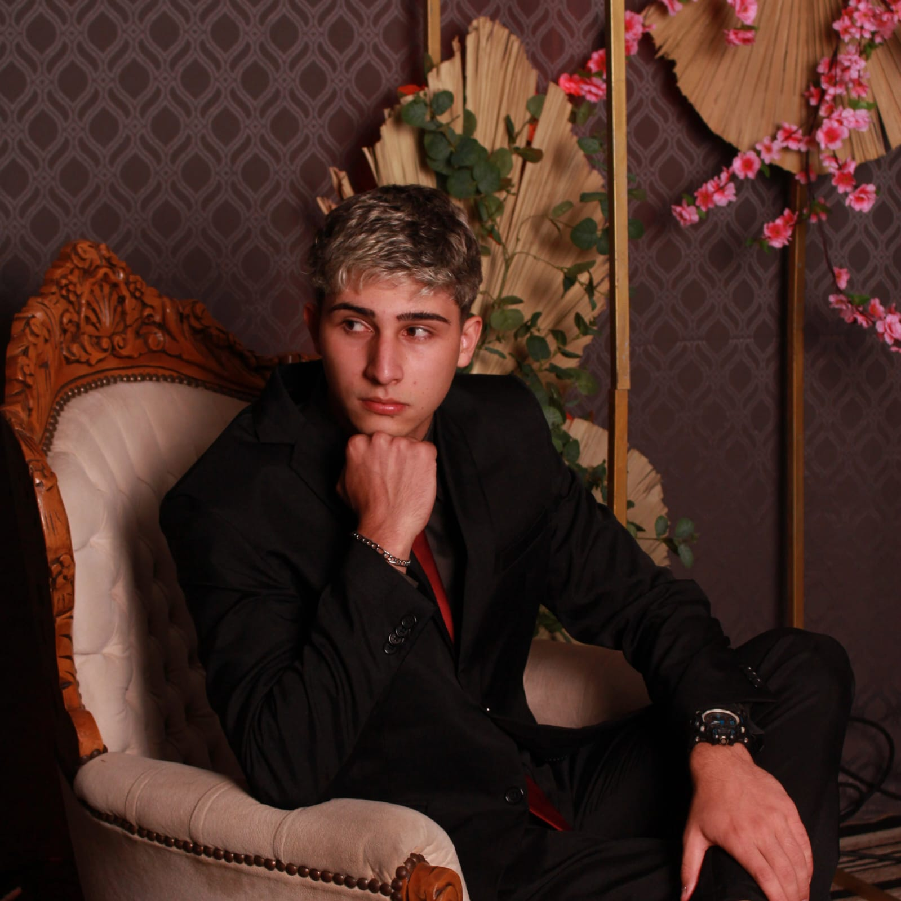

Sobre Mim

Leonardo Bedene Carbornal
Olá, me chamo Leonardo Bedene Carbornal, tenho 19 anos e sou estudante no terceiro semestre de Ciência da Computação,
estou na área de desenvolvimento de softwares e sistemas há aproximadamente 2 anos.
Atualmente trabalho fazendo alguns serviços freelancer, desenvolvendo aplicações mobile e web sob encomenda, porém
busco adentrar melhor esse mercado para obter mais aprendizado e principalmente experiência, além do
objetivo de crescimento profissional numa possível carreira na área de desenvolvimento de softwares.
Falando um pouco de meus hobbies, gosto bastante de treinar e escutar músicas, além de alguns jogos digitais.